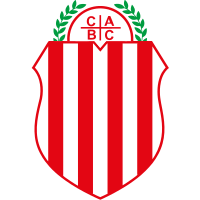

CLUB ATLÉTICO BARRACAS CENTRAL
Fundado el 5 de abril de 1904.
Estadio: Luna 1211 ( esq. Olavarría) - (1437) C.A.B.A.. Tel.: 4301-5855
E-mail: secretaria@barracascentral.com
Internet: www.barracascentral.com
Presidente: Sr. Matías Tapia